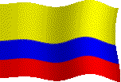
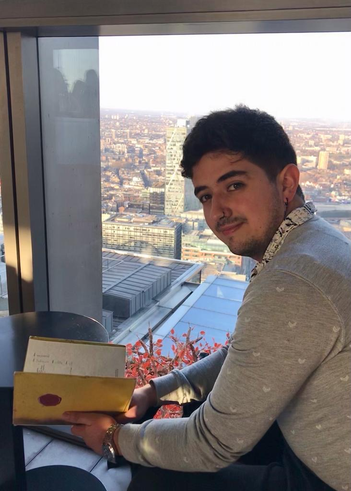

Proud Colombian 
My passion for communication and design drives me to constantly seek new forms of expression.
With strong analytical skills, also in creativity and project management, I strive to make an
impact through innovative strategies and persuasive messaging. With a proven track record of success
in dynamic environments I am poised to tackle challenges and contribute to the success of any team or project.
-

I persued a dual degree in Marketing and Product Design at Pontificia Universidad Javeriana in Colombia
Initially I was really interested with all the theories of communication and after that I found out that
creating my own concepts to sell ideas was very intresting, but I felt I needed something else.
After two years studiyng Marketing I embarked on a complementary challenge, I started a second degree on
Product Design. I made that desicion so I could get a better comprehension on the costumer needs based on
Design Thinking.
-
Multidisciplinary studies in communication spanning
from the fundamentals to current theories and applied
practical across various domains using basic resources
to understand diverse communication modalities.
Emphasis on marketing.
-
Theoretical foundations of contemporary design
extrapolated into practical environment, where analysis
and the creative process provide opportunities to
experiment, create, design, and redesign to continually
enhance creative processes.